Copilot Readiness Monitor
Welcome to the dForts: Copilot Readiness Monitor user guide. This tool is designed to help SharePoint site owners identify and fix oversharing risks before enabling Microsoft 365 Copilot.
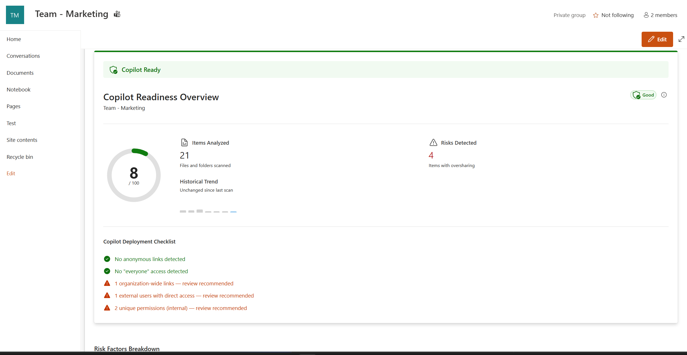
Main Dashboard showing Risk Score and scanned items.Getting Started
The monitor is a SharePoint extension that automatically appears in the top bar of your sites once it has been installed and authorized by your IT Administrator.
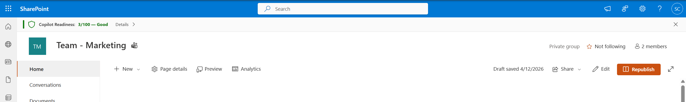
The monitor is always accessible from your site's top navigation bar.-
Access the Monitor
Simply navigate to any SharePoint site where you are an owner. Look for the Shield icon or the "Copilot Readiness" button in the top bar and click it to open the analysis panel.
-
Verify Authorization
On your first visit, the tool will verify your tenant's subscription. If no subscription is found, you will see an "App Subscription Required" message with instructions on how to start your trial.
Running Scans
To analyze your site's exposure, you need to initiate a scan. This process checks all document libraries, folders, and files for overly permissive sharing.
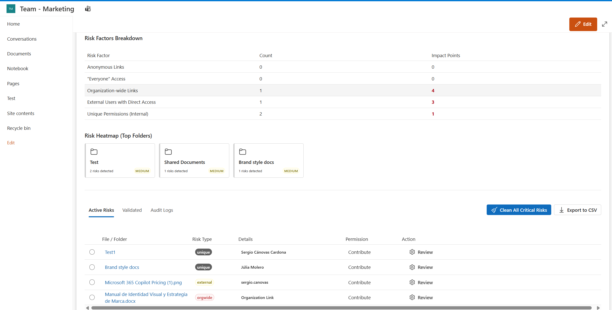
The monitor analyzing site permissions in real-time.Understanding Results
Once the scan is complete, you will receive a Risk Score from 0 to 100.
Risk Factors
- Everyone / All Users: Items shared with the entire organization or external "Everyone" groups.
- Anonymous Links: Public links that anyone on the internet can access.
- Organization Links: Links shared with anyone inside your company.
- External Users: Files shared with people outside your organization.
- Unique Permissions: Items that don't inherit permissions from their parent folder (often a sign of manual, loose sharing).
Folder Heatmap
Visualizing where the risks are concentrated is key to efficient remediation. The Exposure Heatmap shows which folders contain the most risky items.
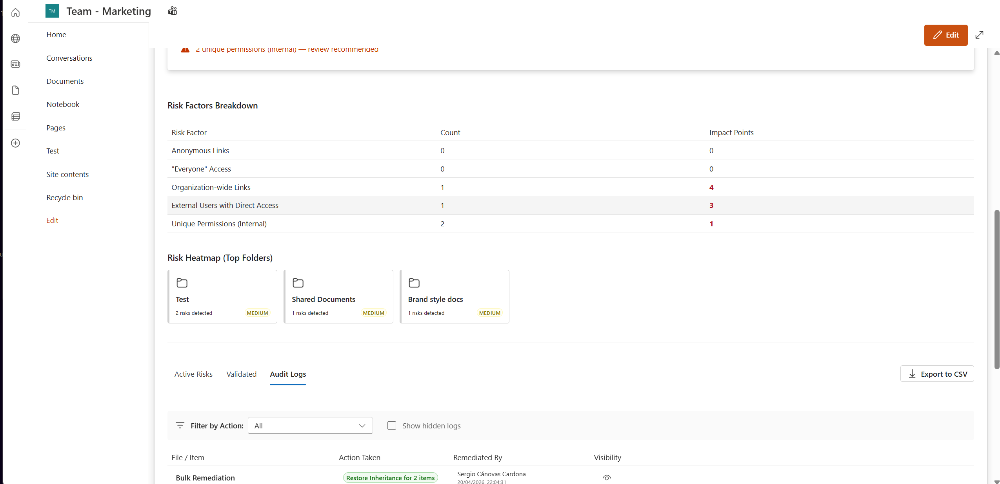
Visual heatmap identifying high-risk folders.Click on any folder in the heatmap to filter the risk list and focus on that specific area of your site.
Remediating Risks
The "Risky Items" tab lists every file or folder that contributed to your score. You can take immediate action on each item.
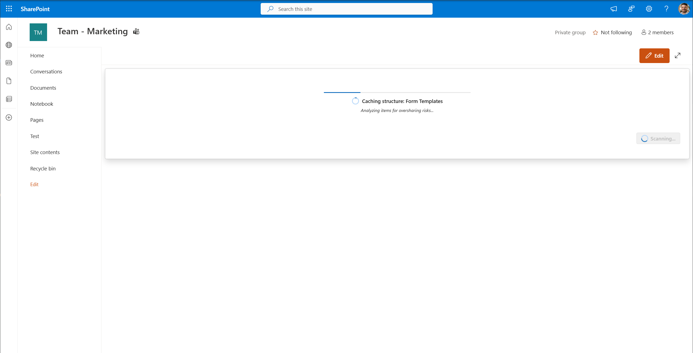
List of identified risks with action buttons.Available Actions
- Remediate: Removes the specific "Everyone" or "Org-wide" access from the item.
- Restore Inheritance: Deletes unique permissions and makes the item inherit from its parent (the safest option).
- Acknowledge: If the risk is intentional (e.g., a public policy file), you can "Acknowledge" it with a note to exclude it from future scores.
Deep Dive: Item Details
Clicking on any file name in the list opens the Remediation Panel. This sidebar provides deep security insights and specific reasons why the item was flagged.
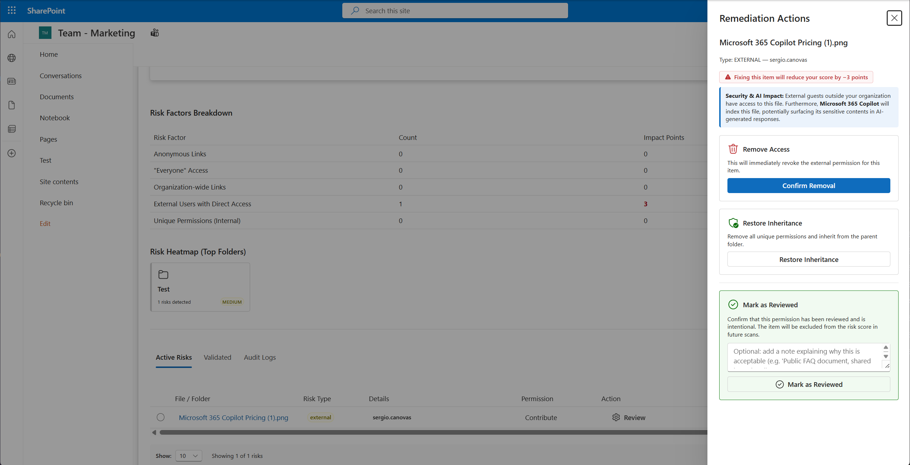
Detailed view of a specific risk with AI impact analysis.The panel includes a specialized Security & AI Impact section that explains how Microsoft 365 Copilot might surface this specific file if left unaddressed.
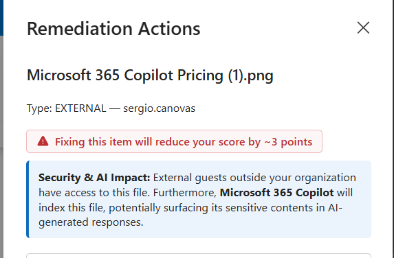
Specific context on why this item is a risk for Copilot.Step-by-Step Remediation
Fixing a risk is a simple process, whether you do it item-by-item or in bulk:
- Identify a file in the Risky Items list and click its action button (e.g., Remediate).
- Alternatively, use Clean All Critical Risks to fix multiple items at once.
- A confirmation dialog will appear explaining exactly what will happen. Click Confirm.
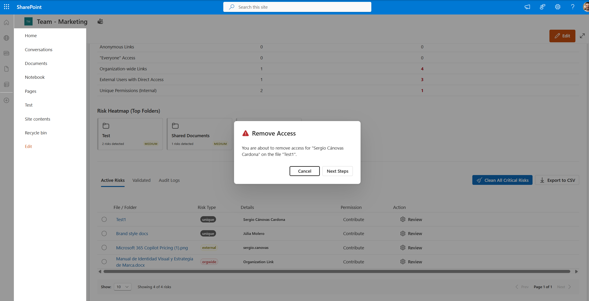
Step 1: Confirming the permission change.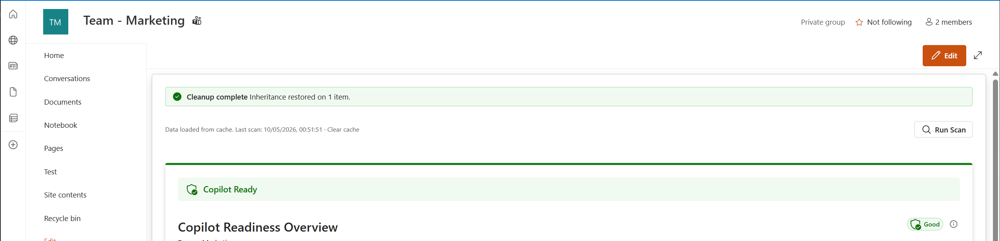
Step 2: Confirmation of successful remediation.Audit Logs
All remediation actions taken through the monitor are recorded in the Remediation Logs tab. This allows you to track who changed what and when.
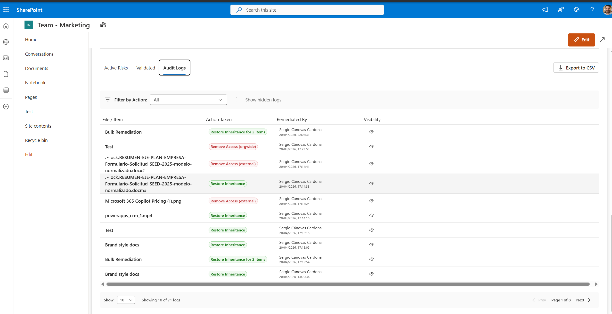
Traceability of all permission changes made via the tool.Subscription & Trial
dForts offers a 30-day free trial with full feature access. No credit card is required to start.
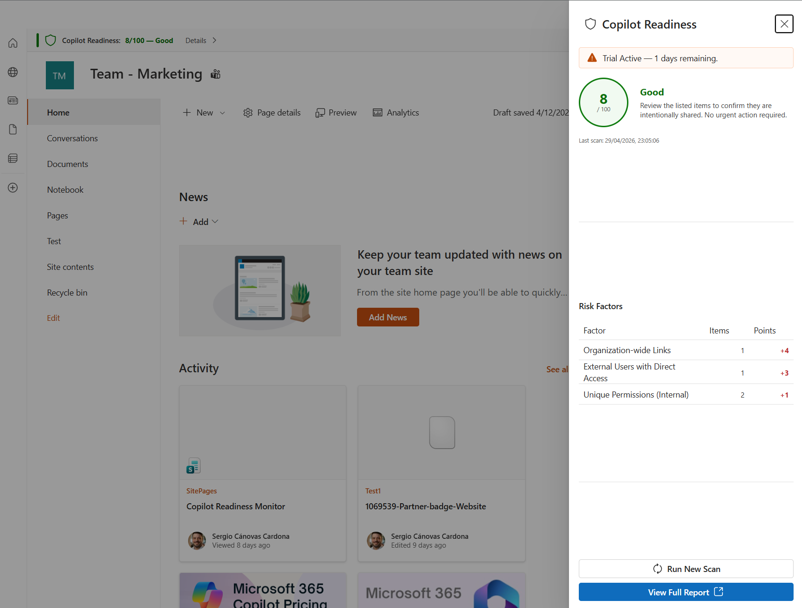
Monitor your trial status directly from the web part.To start your trial or purchase a plan, visit the Azure Portal link provided in the app: